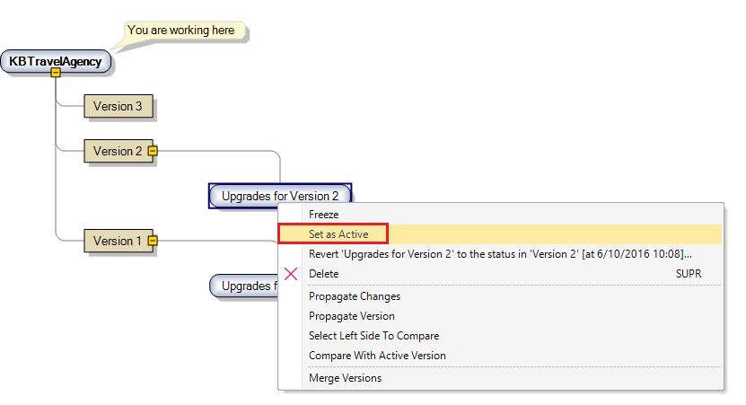

At any given time, a developer is working, for example, either on fixes to an already released application or on new features for the next application's release. Both application states (released and to be released) are represented by Development Versions (or the Trunk) in GeneXus.  |
| Backlinks |
| Identifying the Active Development Version |
| What is a Development Version? |